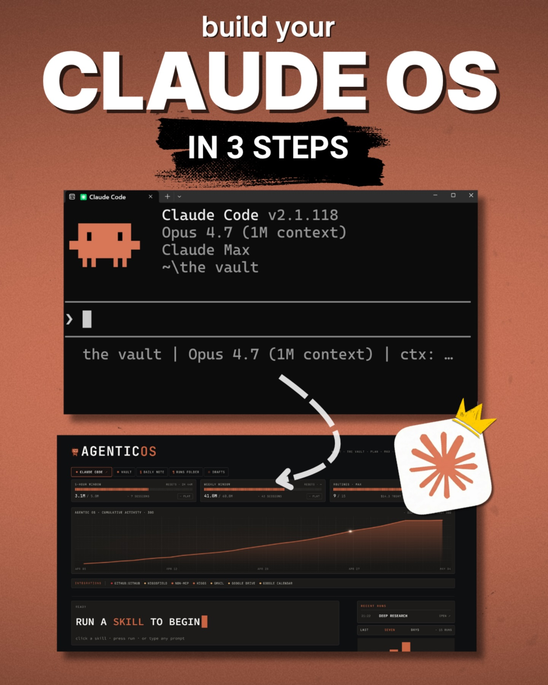
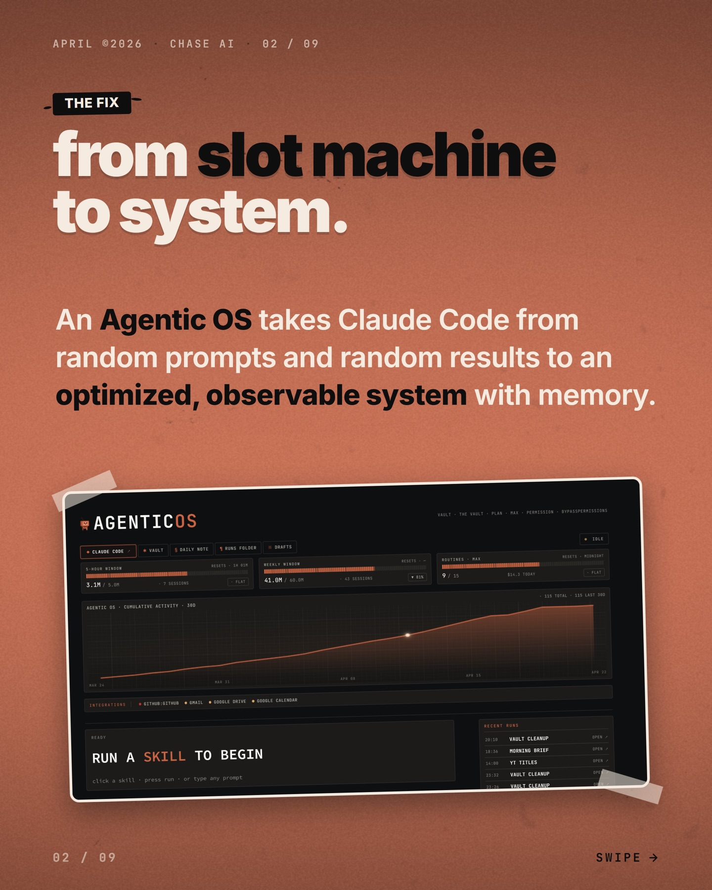
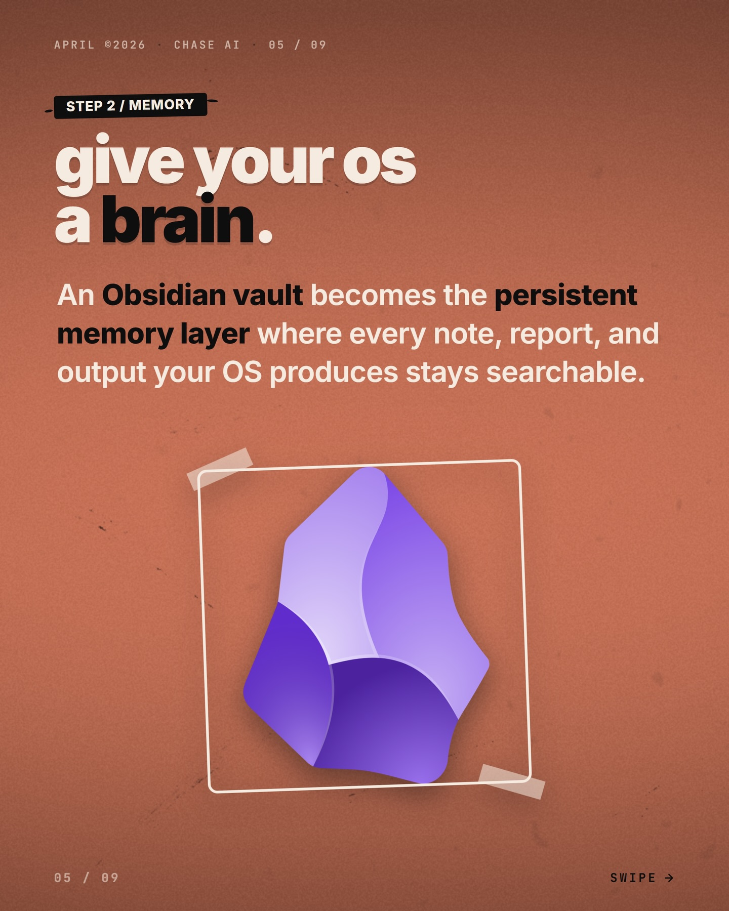
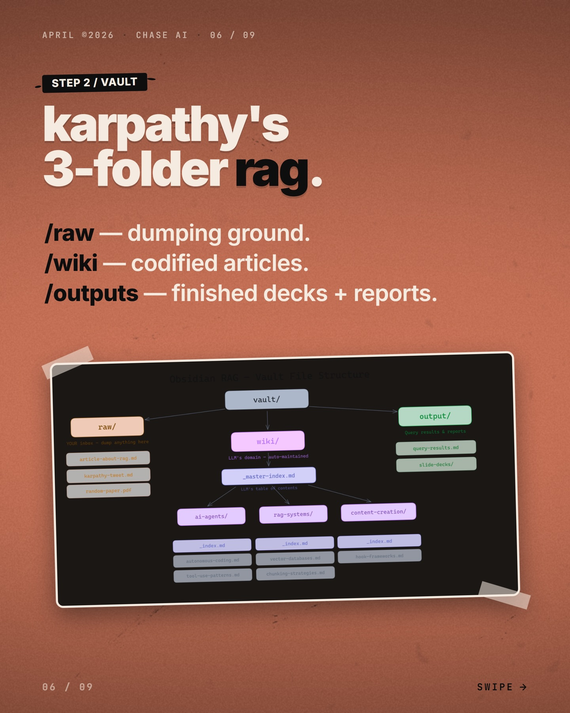
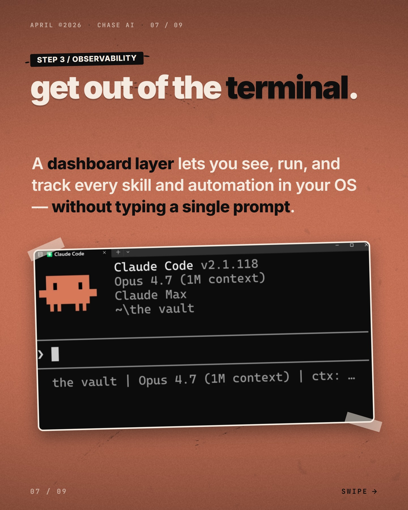
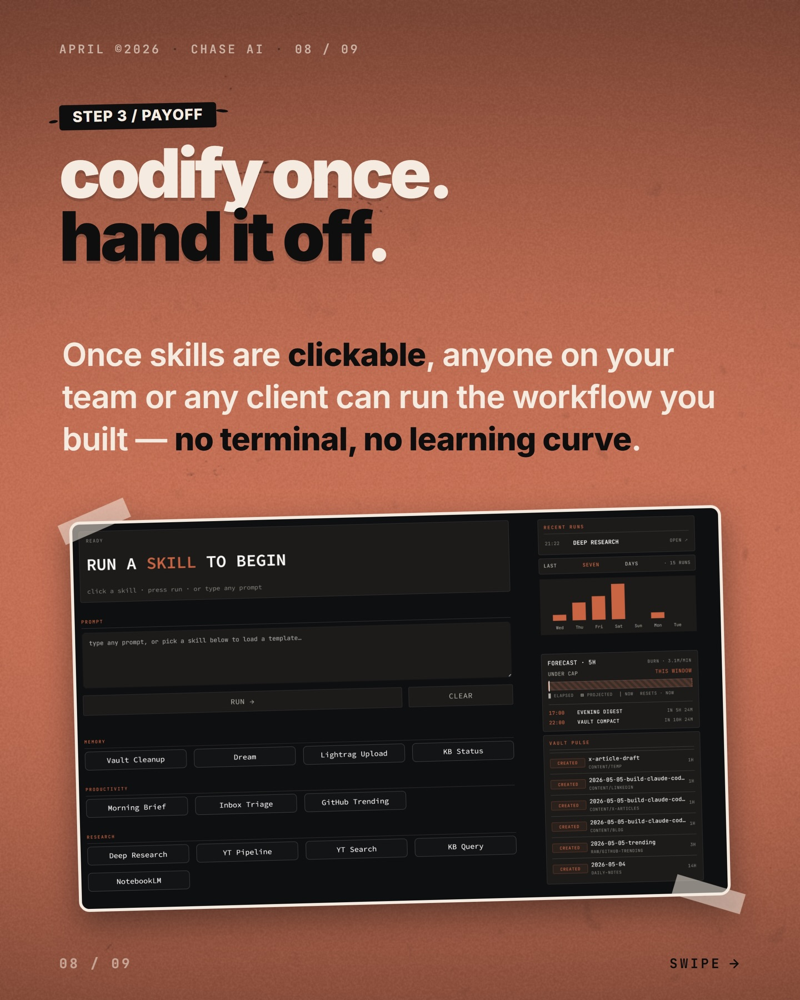

Instagram Post

build your CLAUDE OS IN
carousel (9 slides) (enriched by ClaudeClaw)
Summary
build your CLAUDE OS IN 3 STEPS Claude Code Claude Code v... | build your CLAUDE OS IN 3 STEPS Claude Code Claude Code v... | APRIL ©2026 CHASE AI 02 / 09 THE FIX from slot machine to... | APRIL ©2026 CHASE AI 03 / 09 STEP 1 / ARCHITECTURE turn w... | APRIL ©2026 CHASE AI 04 / 09 STEP 1 / EXAMPLE pick a domain | APRIL ©2026 • CHASE AI • 05 / 09 STEP 2 / MEMORY give you... | APRIL ©2026 CHASE AI...
1
build your CLAUDE OS IN 3 STEPS Claude Code Claude Code v2.1.118 Opus 4.7 (1M context) Claude Max ~\the vault
2
build your CLAUDE OS IN 3 STEPS Claude Code Claude Code v2.1.118 Opus 4.7 (1M context) Claude Max ~\
3
APRIL ©2026 CHASE AI 02 / 09 THE FIX from slot machine to system. An Agentic OS takes Claude Code from random prompts and random results to an
4
APRIL ©2026 CHASE AI 03 / 09 STEP 1 / ARCHITECTURE turn workflows into infrastructure. Map your work into domains, break each domain into
5
APRIL ©2026 CHASE AI 04 / 09 STEP 1 / EXAMPLE pick a domain. break it down. A research domain becomes YouTube search, deep research, morning reports, and competitor watching — each one its own skill you can run on demand. RESEARCH CAPABILITIES modular YT Pipeline → raw Deep Research → raw LightRAG Query → wiki Morning Trend Scan → raw Competitor Watch → raw NotebookLM Bridge → wiki 04 / 09 SWIPE →
A brown background displays text about breaking down a research domain into skills, with a dark-themed mobile interface taped to the surface showing a list of research capabilities.
6
APRIL ©2026 • CHASE AI • 05 / 09 STEP 2 / MEMORY give your os a brain. An Obsidian vault becomes the persistent memory layer where every note, report, and output your OS produces stays searchable. 05 / 09 SWIPE →
A purple, faceted, stone-like icon (the Obsidian logo) is centered within a white square outline, taped to a textured brown background, with text about giving an OS a brain.
7
APRIL ©2026 CHASE AI 06 / 09 STEP 2 / VAULT karpathy's 3-folder rag. /raw — dumping ground. /wiki — codified articles. /outputs — finished decks + reports. Obsidian RAG - Vault File Structure vault/ raw/ YOUR inbox - dump anything here article-about-rag.md karpathy-tweet.md random-
8
APRIL ©2026 CHASE AI 07 / 09 STEP 3 / OBSERVABILITY get out of the terminal. A dashboard layer lets you see, run, and track every skill and automation in your OS — without typing a single prompt. Claude Code Claude Code v2.1.118 Opus 4.7 (1M context) Claude Max ~\the vault > the vault | Opus 4.7 (1M context) | ctx: ... 07 / 09 SWIPE →
A presentation slide with a reddish-brown background displays text about observability and a screenshot of a terminal window showing "Claude Code" details and a command prompt.
9
APRIL ©2026 CHASE AI 08 / 09 STEP 3 / PAYOFF codify once. hand it off. Once skills are clickable, anyone on
All slides




